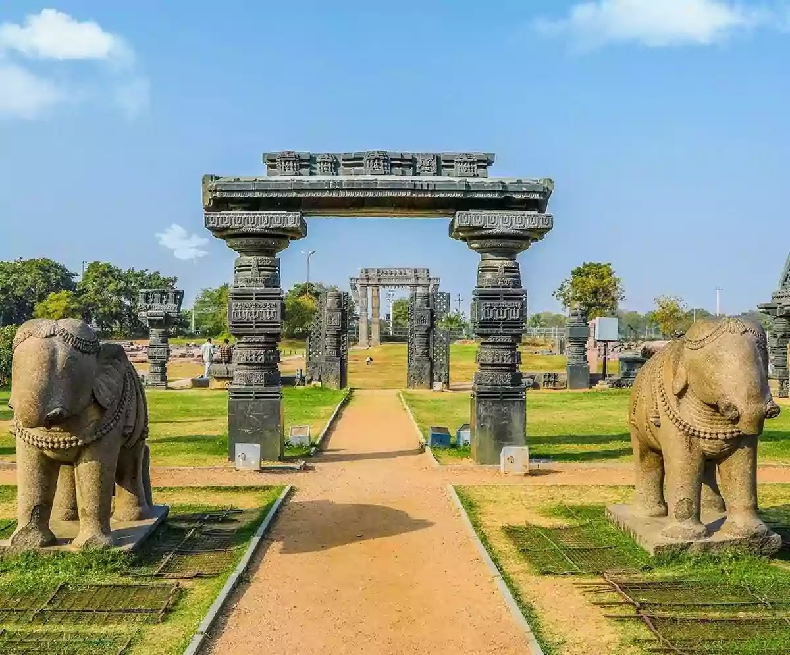
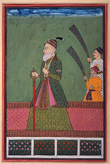
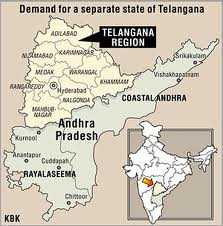

Main article: History of Telangana
Telangana was governed by many rulers, including the Maurya Empire (320 BCE–180 BCE), Satavahana dynasty (180 BCE–220 CE), Vakataka dynasty (250 CE–500 CE), Chalukya dynasty (543 CE–753 CE), Rashtrakuta dynasty (753 CE–982 CE), the Kakatiya dynasty (1083 CE–1323 CE), the Musunuri Nayaks (1326 CE–1356 CE) the Delhi Sultanate, the Bahmani Sultanate (1347 CE–1512 CE), Vijayanagara Empire (1336 CE–1646 CE), Qutb Shahi dynasty (1512 CE–1687 CE), Mughal Empire (1687 CE–1724 CE) and Asaf Jahi Dynasty (1724 CE–1948 CE).
1)Kakatiya Dynasty

Main article: Kakatiya dynasty
Ramagiri Fort ruins at Kalvacherla in Peddapalli district is an ancient fort initially built by the Sathavahanas and modified many times by other dynasties till the 16th century.
Kota Gullu, temple ruins built in the 12th century by Kakatiyas at Ghanpur, Mulug in Warangal district.
The Telangana area experienced its golden age during the reign of the Kakatiya dynasty, which ruled most parts of the present-day Andhra Pradesh and Telangana from 1083 to 1323 CE.[26] Rudrama Devi and Prataparudra II were prominent rulers from the Kakatiya dynasty. The dynasty weakened with the attack of Malik Kafur in 1309 and was dissolved after the defeat of Prataparudra by the forces of Muhammad bin Tughluq in 1323.[27][28]
2)Qutab Shahi and Asaf Jahi's

Golconda Fort
The area came under the rule of the Delhi Sultanate in the 14th century, followed by the Bahmani Sultanate. Quli Qutb Mulk, a governor of Golconda, revolted against the Bahmani Sultanate and established the Qutb Shahi dynasty in 1518. On 21 September 1687, the Golconda Sultanate came under the rule of the Mughal emperor Aurangzeb after a year-long siege of the Golconda fort.[29]
During the early seventeenth century a strong cotton-weaving industry existed in Telangana. Large quantities of cotton were produced for domestic and exports consumption. High quality plain and patterned cloth made of muslin and calico was produced.[30]
Hyderabad State in 1909.
When Asif Jah I died in 1748, there was political unrest due to contention for the throne among his sons, who were aided by opportunistic neighbouring states and colonial foreign forces. In 1769, Hyderabad city became the formal capital of the Nizams. The Nizam Nasir-ud-dawlah, Asaf Jah IV signed the subsidiary alliance with the British in 1799 and lost its control over the state's defence and foreign affairs. Hyderabad State became a princely state among the presidencies and provinces of British India.[31]
In 1787, heavy flooding killed over 20,000 causing a plague which killed about 10,656,000 Telugus again in Telangana.[32]
Post-independence

When India became independent from the British Empire in 1947, the Nizam of Hyderabad did not want to merge with the Indian Union and wanted to remain independent. The Government of India annexed Hyderabad State on 17 September 1948 after a military operation called Operation Polo.[26] It appointed a civil servant, M. K. Vellodi, as first chief minister of Hyderabad State on 26 January 1950.[33] He administered the state with the help of English-educated bureaucrats from the Madras and Bombay states, who were familiar with British systems of administration unlike the bureaucrats of Hyderabad State who used a completely different administrative system. The official language of the state was switched from Urdu to English.
Telangana Rebellion
Main article: Telangana Rebellion
The Telangana Rebellion was a peasant revolt supported by the communists. It originated in the Telangana regions of the Hyderabad State between 1946 and 1951, led by the Communist Party of India (CPI).[35]
The revolt began in the Nalgonda district against the feudal lords of Reddy and Velama castes. It quickly spread to the Warangal and Bidar districts. Peasant farmers and labourers revolted against the local feudal landlords (jagirdars and deshmukhs) and later against the Nizam Osman Ali Khan. The violent phase of the movement ended after the government of India's Operation Polo.[36] Starting in 1951, the CPI shifted to a more moderate strategy of seeking to bring communism to India within the framework of Indian democracy.[37]
States Reorganisation Commission
In December 1953, the States Reorganisation Commission (SRC) was appointed to form states on a linguistic basis.[38] An agreement was reached between Telangana leaders and Andhra leaders on 20 February 1956 to merge Telangana and Andhra with promises to safeguard Telangana's interests.[39] After reorganisation in 1956, the region of Telangana was merged with Andhra State to form Andhra Pradesh.
Following this Gentlemen's agreement, the central government established the unified state of Andhra Pradesh on 1 November 1956.[40][41][42] G.O 553 of 1959 from the united Andhra Pradesh state moved two revenue divisions of Bhadrachalam from East Godavari and Aswaraopeta from West Godavari to Khammam for administrative convenience.
Formation of Telangana state in 2014
Main article: Telangana movement
There have been several movements to revoke the merger of Telangana and Andhra, major ones occurring in 1969, 1972 and 2009. The movement for a new state of Telangana gained momentum in the 21st century by an initiative of Telangana Political Joint Action Committee, TJAC including political leadership representing Telangana area.[43] On 9 December 2009 the government of India announced the process of formation of the Telangana state. Violent protests led by people in the Coastal Andhra and Rayalseema regions occurred immediately after the announcement, and the decision was put on hold on 23 December 2009.
The movement continued in Hyderabad and other districts of Telangana.[44] There have been hundreds of claimed suicides,[45] strikes, protests and disturbances to public life demanding separate statehood.